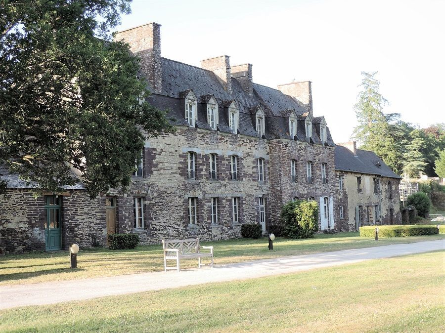

Options de logement

- Il y aura un espace sur place où planter des tentes
- Il y a des places de parking adaptées aux camping cars
- Il y a de nombreux hôtels et gîtes dans la région. Voici deux liens de sites qui référencient un certains nombre de gîtes (il en existe d'autres, Airbnb par exemple) :